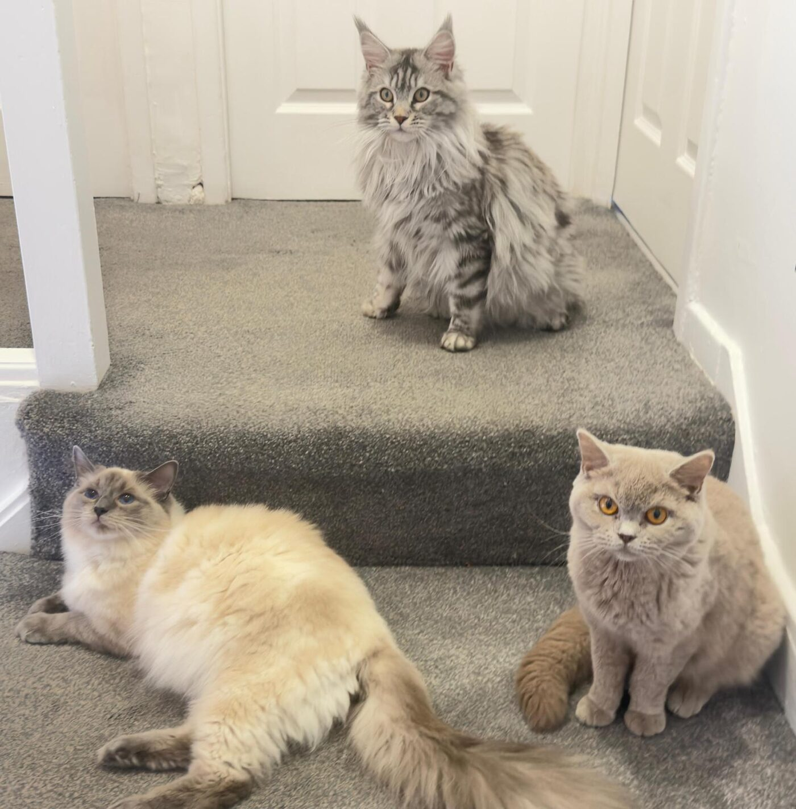

GCCF & TICA Registered · Based in Leeds, Yorkshire
Welcome to Little Paws
Welcome to Little Paws
By Miles
A small, heart-led home for beautifully raised Ragdolls, Maine Coons, and British Shorthair cats. Every kitten starts life warmly socialised and loved, ready to become part of yours.
Our Breeds
Three families, endlessly lovable
We focus on the breeds we know best, raising kittens slowly, carefully, in a busy home full of affection.

Kind Words
From our kitten families
The part that means the most: hearing how our kittens are settling in.